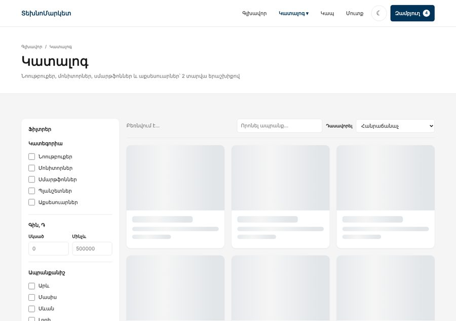
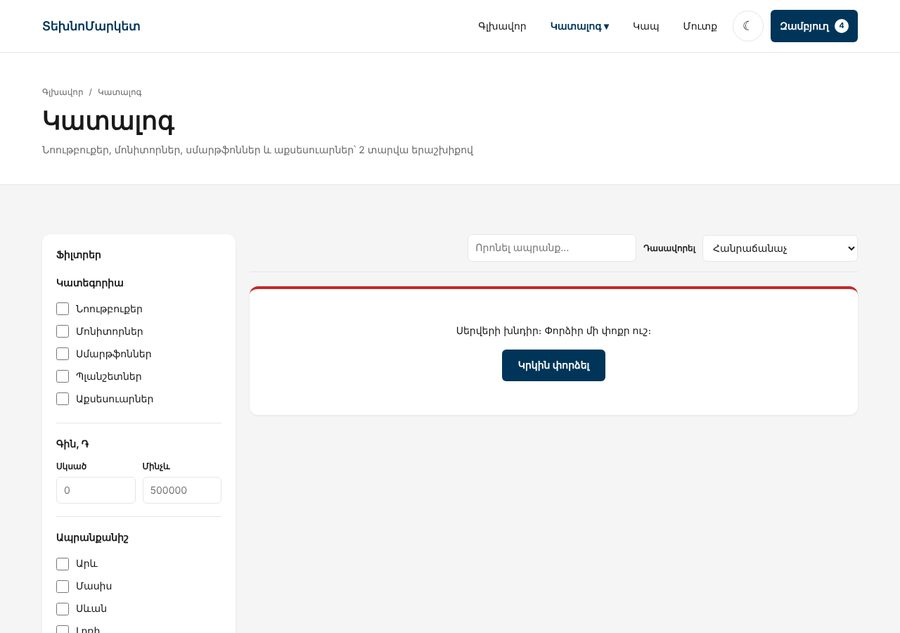

Առաջադրանք 3 / 3 · JS Դաս 19–23 · տնային շաբաթ → պաշտպանություն Դաս 24
Դաս 19–23-ի ընթացքում նախագիծը աճում է ամեն դասի հետ՝ ասինխրոնություն, fetch, API շերտ, դասեր, փակույթներ, Set և Map։ Դաս 24-ում այն պաշտպանում ես։ Ավարտելուց հետո համեմատիր վերջնական օրինակի հետ։
Ապրանքները գալիս են «սերվերից»՝ data/products.json-ից։ Ամեն էջ ունի երեք վիճակ՝ բեռնում, տվյալներ, սխալ։ Զամբյուղը դաս է, հավանածները՝ Set, ֆիլտրերի ցուցակները կառուցվում են տվյալներից, ստուգումը՝ սեփական սխալների դասերով։ Արտաքինից կայքը համարյա չի փոխվում, բայց կոդը պատրաստ է PHP բլոկին․ այնտեղ կփոխվի միայն api.js-ը։


| Դաս | Ինչ ես ավելացնում | Մոտավոր ժամ |
|---|---|---|
| 19 | Մտածիր․ որ ֆունկցիաները կդառնան ասինխրոն։ Փորձիր delay()-ով նմանակել դանդաղ բեռնում | 1 |
| 20 | products.json, api.js, երեք վիճակ կատալոգում, զամբյուղում և ապրանքի էջում | 3 |
| 21 | Քեշ, «Կրկին փորձել», Promise.all ապրանքի էջում | 1.5 |
| 22 | Cart դաս, store.js, header-ի բաժանորդագրություն | 2 |
| 23 | Wishlist՝ Set-ով, ֆիլտրեր տվյալներից՝ Map-ով, ValidationError, անփոփոխ թարմացումներ | 2.5 |
| 24 | Ստուգաթերթ (բաժին 05), README, պաշտպանություն (բաժին 06) | — |
JSON-ը ձեռքով մի գրիր։ Բաց արա կայքը, Console-ում գրիր copy(JSON.stringify(PRODUCTS, null, 2)) (կամ console.log և պատճենիր) և պահիր data/products.json։ starter/-ի JSON-ում արդեն կան gallery, description և specs դաշտերը։ data.js-ից մնում են միայն CATEGORIES-ը և BRANDS-ը՝ config.js-ում, Object.freeze-ով (Դաս 23)։
Բոլոր հարցումները անցնում են մեկ ֆայլով։ response.ok-ը ստուգվում է մեկ անգամ, սխալները՝ սեփական դասերով։ Քեշում պահում ենք խոստումը, ոչ պատասխանը․ եթե էջի երկու մաս միաժամանակ ուզեն ապրանքները, հարցումը կգնա մեկ անգամ։
const cache = new Map();
async function fetchJson(url) {
const response = await fetch(url);
if (!response.ok) { // 404-ը catch չի ընկնում ինքնաբերաբար (JS Դաս 20)
throw new ApiError(response.status, `Հարցումը ձախողվեց՝ ${url}`);
}
return response.json();
}
function request(url) {
if (!cache.has(url)) {
const promise = fetchJson(url).catch(error => {
cache.delete(url); // ձախողվածը չենք պահում՝ «Կրկին փորձել»-ը նորից կհարցնի
throw error;
});
cache.set(url, promise);
}
return cache.get(url);
}
export const api = {
getProducts() {
return request(PRODUCTS_URL);
},
async getProduct(id) {
const products = await request(PRODUCTS_URL);
const product = products.find(p => p.id === id);
if (!product) throw new NotFoundError("Այդպիսի ապրանք չկա։");
return product;
}
};export class ApiError extends Error {
constructor(status, message) {
super(message);
this.name = "ApiError";
this.status = status;
}
get isServerError() {
return this.status >= 500;
}
}
export class NotFoundError extends Error {
constructor(message) {
super(message);
this.name = "NotFoundError";
}
}
// ValidationError — քայլ 7products-ը հիմա փոփոխական է, որ լցվում է await-ից հետոgetErrorMessage) և «Կրկին փորձել», որը նորից կանչում է բեռնումը։ Դելեգացիա, որովհետև կոճակը ստեղծվում է innerHTML-ովproduct.json) և տես 404-ի մշակումըasync function loadProducts() {
productsEl.innerHTML = createSkeletonCards(PAGE_SIZE);
productsEl.setAttribute("aria-busy", "true");
statsEl.textContent = "Բեռնվում է…";
paginationEl.innerHTML = "";
try {
products = await api.getProducts();
renderFilterOptions();
readFilters();
render();
} catch (error) {
productsEl.innerHTML = createErrorState(getErrorMessage(error));
statsEl.textContent = "";
console.error(error);
} finally {
productsEl.removeAttribute("aria-busy");
}
}Ապրանքի էջում՝ Promise.all([api.getProduct(id), api.getProducts()]) (Դաս 19)․ ապրանքը և «նման ապրանքների» ցուցակը։ Քեշի շնորհիվ ֆայլը կբեռնվի մեկ անգամ։ NotFoundError-ի դեպքում «Կրկին փորձել» կոճակ պետք չէ։
Ինչպես Դաս 22-ի դասարանականում, բայց մի տարբերությամբ․ ապրանքները գալիս են ավելի ուշ, քան ստեղծվում է զամբյուղը (header-ի թվի համար դրանք պետք չեն)։ Ուստի getItems(products)-ը և getTotals(products)-ը ստանում են դրանք պարամետրով։
export class Cart {
#items; // փակ — դրսից ոչ ոք չի փչացնի (JS Դաս 22)
#storageKey;
#listeners = [];
constructor(storageKey) {
this.#storageKey = storageKey;
this.#items = load(storageKey, []);
}
// ---------- Կարդալու համար ----------
get count() {
return this.#items.reduce((sum, item) => sum + item.qty, 0);
}
// ...
add(id, qty = 1) {
const existing = this.#items.find(item => item.id === id);
// Անփոփոխ թարմացում՝ նոր զանգված, ոչ push (JS Դաս 23)
this.#items = existing
? this.#items.map(item => item.id === id ? { ...item, qty: Math.min(item.qty + qty, MAX_QTY) } : item)
: [...this.#items, { id, qty: Math.min(qty, MAX_QTY) }];
this.#save();
return this;
}
// ...
onChange(listener) {
this.#listeners.push(listener);
}
// ---------- Ներքին ----------
#save() {
save(this.#storageKey, this.#items);
this.#listeners.forEach(listener => listener(this));
}
}import անենք (JS Դաս 18), ուստի օբյեկտները ընդհանուր են։
import { Cart } from "./models/Cart.js";
import { Wishlist } from "./models/Wishlist.js";
import { KEYS } from "./config.js";
export const cart = new Cart(KEYS.cart);
export const wishlist = new Wishlist(KEYS.wishlist);Առաջադրանք 1-ում saveCart()-ը ինքն էր թարմացնում header-ի թիվը, այսինքն զամբյուղը «գիտեր» header-ի մասին։ Հիմա Cart-ը ոչինչ չգիտի DOM-ի մասին․ այն պարզապես կանչում է բոլոր բաժանորդներին։ Header-ը բաժանորդագրվում է cart.onChange(renderCartCount)-ով։ Այդպես դասը հեշտ է փորձարկել Console-ում՝ առանց էջի։
Wishlist դաս՝ #ids = new Set(...), has, toggle, size։ JSON-ը չգիտի Set, ուստի պահում ենք [...this.#ids], բեռնում՝ new Set(array)z-index: 2, որ լինի քարտի հղման շերտից վերև), ապրանքի էջում՝ «♡ Հավանել» կոճակwishlist-ըexport class Wishlist {
#ids;
#storageKey;
constructor(storageKey) {
this.#storageKey = storageKey;
this.#ids = new Set(load(storageKey, [])); // JSON-ը Set չգիտի՝ պահում ենք զանգված
}
get size() {
return this.#ids.size;
}
has(id) {
return this.#ids.has(id);
}
// Վերադարձնում է նոր վիճակը՝ true, եթե հիմա հավանած է
toggle(id) {
if (this.#ids.has(id)) {
this.#ids.delete(id);
} else {
this.#ids.add(id);
}
save(this.#storageKey, [...this.#ids]);
return this.#ids.has(id);
}
}Եթե վաղը խանութում հայտնվի «Տեսախցիկներ» կատեգորիան, HTML-ը չպիտի փոխվի։ Կատեգորիաների և ապրանքանիշերի ցուցակները կառուցում ենք ապրանքներից, իսկ քանակները հաշվում Map-ով։
export function countBy(products, key) {
const counts = new Map();
products.forEach(p => counts.set(p[key], (counts.get(p[key]) ?? 0) + 1));
return counts;
}export function getVisibleProducts(products, state, wishlist) {
const query = state.search.toLowerCase();
const result = products
.filter(p => state.categories.length === 0 || state.categories.includes(p.category))
.filter(p => state.brands.length === 0 || state.brands.includes(p.brand))
.filter(p => state.min === null || p.price >= state.min)
.filter(p => state.max === null || p.price <= state.max)
.filter(p => state.stock !== "in" || p.inStock)
.filter(p => state.stock !== "sale" || p.oldPrice !== null)
.filter(p => state.stock !== "fav" || wishlist.has(p.id))
.filter(p => query === "" ||
p.name.toLowerCase().includes(query) ||
CATEGORIES[p.category].toLowerCase().includes(query));
return [...result].sort(SORTERS[state.sort] ?? SORTERS.popular);
}Առաջադրանք 1-ում ամեն ֆիլտր if էր և result = result.filter(...)։ Այստեղ ամեն ֆիլտր պայման է՝ «կամ ֆիլտրը միացված չէ, կամ ապրանքը համապատասխանում է», և ամբողջը մեկ շղթա է։ Ֆունկցիան չի փոխում ոչ products-ը, ոչ state-ը (Դաս 23)։ Երկու ձևն էլ ճիշտ են․ պաշտպանության ժամանակ բացատրիր՝ որն ես ընտրել և ինչու։
Վերաշարադրիր Առաջադրանք 2-ի ստուգումը։ Կանոնը ֆունկցիա է, որը նետում է ValidationError, իսկ ստուգիչը catch-ում տարբերում է այն ծրագրի սխալից։ Կանոնների «գործարանները» փակույթներ են․ minLength(3, "...")-ը վերադարձնում է ֆունկցիա, որը հիշում է 3-ը։
export const required = message => (value, field) => {
if (value.trim() === "") throw new ValidationError(field, message);
};
export const minLength = (min, message) => (value, field) => {
if (value.trim().length < min) throw new ValidationError(field, message);
};
export const matches = (pattern, message) => (value, field) => {
if (value.trim() !== "" && !pattern.test(value.trim())) throw new ValidationError(field, message);
}; function validateField(name) {
const input = form[name];
const value = input.type === "checkbox" ? (input.checked ? "on" : "") : input.value;
try {
rules[name].forEach(rule => rule(value, name, form));
clearError(form, name);
return true;
} catch (error) {
if (!(error instanceof ValidationError)) throw error; // ծրագրի սխալը չենք թաքցնում
showError(form, error.field, error.message);
return false;
}
}const validator = createValidator(form, {
name: [required("Գրիր անունդ և ազգանունդ"), minLength(3, "Առնվազն 3 նիշ")],
phone: [required("Հեռախոսը պարտադիր է"), matches(patterns.phone, "Օրինակ՝ +374 91 23 45 67")],
email: [matches(patterns.email, "Ստուգիր հասցեն․ օրինակ՝ ani@example.com")],
address: [(value, field) => {
if (!isPickup() && value.trim() === "") throw new ValidationError(field, "Գրիր առաքման հասցեն");
}],
terms: [required("Անհրաժեշտ է համաձայնությունը")]
});Cart-ում push և qty++ չկան․ ամեն փոփոխություն ստեղծում է նոր զանգված map-ով, filter-ով և spread-ով։ Կարգավորումները՝ Object.freeze։ Ստուգիր Console-ում․ PAGE_SIZE-ը փոխել չի ստացվի։
| Սխալ | Ինչպես ուղղել |
|---|---|
products.find is not a function | Մոռացել ես await-ը, և products-ը Promise է |
| Էջը դատարկ է, Console-ում՝ ոչինչ | async ֆունկցիայի սխալը առանց catch-ի կորչում է։ Կանչող տեղում՝ try/catch |
404-ի դեպքում էջում հայտնվում է undefined | response.ok-ը չի ստուգվում, fetch-ը 404-ը սխալ չի համարում (Դաս 20) |
| «Կրկին փորձել»-ը ոչինչ չի անում | Քեշում մնացել է ձախողված Promise-ը։ catch-ում ջնջիր այն cache.delete(url) |
cart.#items-ը Console-ում սխալ է տալիս | Այդպես էլ պետք է․ փակ դաշտ է (Դաս 22)։ Օգտագործիր cart.count |
| Հավանածները կորչում են թարմացնելիս | JSON.stringify(new Set([1]))-ը "{}" է։ Պահիր [...set] |
this-ը undefined է forEach-ի ներսում | Սովորական function-ի փոխարեն՝ arrow (Դաս 22) |
catch-ը թաքցնում է ծրագրի իսկական սխալները | Ստուգիր instanceof ValidationError, մնացածը throw error (Դաս 23) |
Բացիր example-2-final-ը Live Server-ով (file://-ով մոդուլները և fetch-ը չեն աշխատի)։ Համեմատիր․
1. Ֆայլերի ծառը. Քանի՞ մոդուլ ունես, և ո՞րն է ամենամեծը։ Եթե մի ֆայլ 250 տողից երկար է, գուցե այն երկու գործ է անում։
2. Կախվածություններ. Նկարիր քո import-ների գրաֆը (Դաս 18)։ Օղակ կա՞։
3. Սխալներ. Network → Offline։ Ամեն էջ ի՞նչ է ցույց տալիս։
4. API-ի փոխարինում. Եթե վաղը ապրանքները գան /api/products-ից, քանի՞ ֆայլ պետք է փոխես։ Օրինակում՝ մեկ (config.js-ի PRODUCTS_URL-ը)։
products.json-իցvar, console.log, debuggerfetch ստուգում է response.ok, ամեն catch ինչ-որ բան անում էconfig.js)#private դաշտերովtextContent-ով?id=999.gitignoreԱմեն ուսանողին՝ 7–10 րոպե (JS Դաս 24, բաժին 04)։
| Ինչ ցույց տալ | Րոպե |
|---|---|
| Ցուցադրություն․ հրապարակված կայքը՝ ֆիլտր → ապրանք → զամբյուղ → պատվեր → շնորհակալություն | 3 |
| Ճարտարապետություն․ մոդուլների ծառը և կախվածությունների գրաֆը | 2 |
| Հետաքրքիր կտոր․ կոդ, որով հպարտ ես | 2 |
| Դժվարությունը․ ինչ չէր ստացվում և ինչպես լուծեցիր | 2 |
| Հարցեր | 1 |
id և qty (Դաս 16)document-ի վրա, ոչ ամեն կոճակիfetch-ը վերադարձնի 404, և որտեղ է դա մշակվումCart դասը ավելի լավ, քան Առաջադրանք 1-ի ֆունկցիաները, և ինչով՝ ոչSet հավանածների, բայց զանգված զամբյուղի համար| Չափանիշ | Միավոր |
|---|---|
| Ֆունկցիոնալություն․ ամեն ինչ աշխատում է, Console-ը մաքուր է | 25 |
| Կոդի կառուցվածք․ մոդուլներ, մեկ ֆունկցիա = մեկ գործ, կրկնություն չկա | 20 |
| Վիճակի կառավարում․ մեկ աղբյուր → render, ուղիղ DOM-ի փոփոխում չկա | 15 |
| Եզրային դեպքեր․ բեռնում, սխալ, դատարկ, չգտնվեց | 15 |
| UI և ադապտիվություն | 10 |
| Git և README | 10 |
| Ներկայացում և պատասխաններ | 5 |
| Ընդամենը | 100 |
PHP բլոկում data/products.json-ը կփոխարինվի իսկական API-ով (PHP Դաս 17), զամբյուղը կպահվի սեսիայում, իսկ մուտքն ու գրանցումը կաշխատեն նույն դաշտերով (PHP Դաս 16)։ Քո api.js-ը և validation.js-ը կմնան գրեթե նույնը։